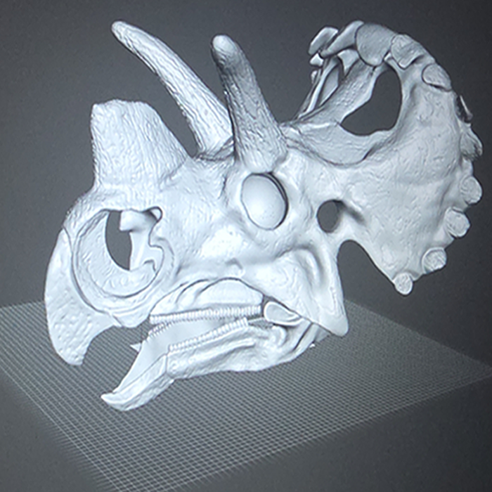
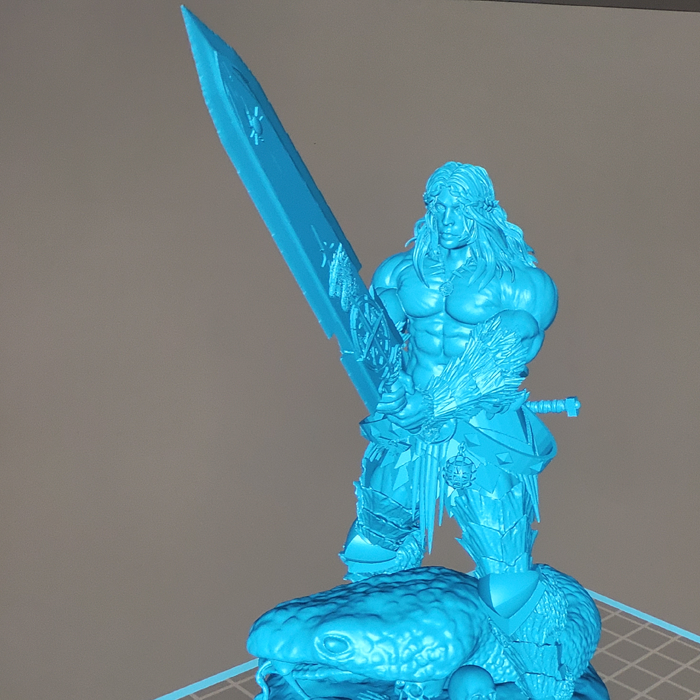
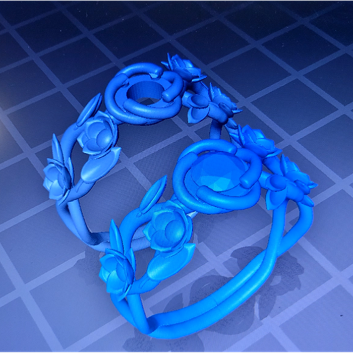
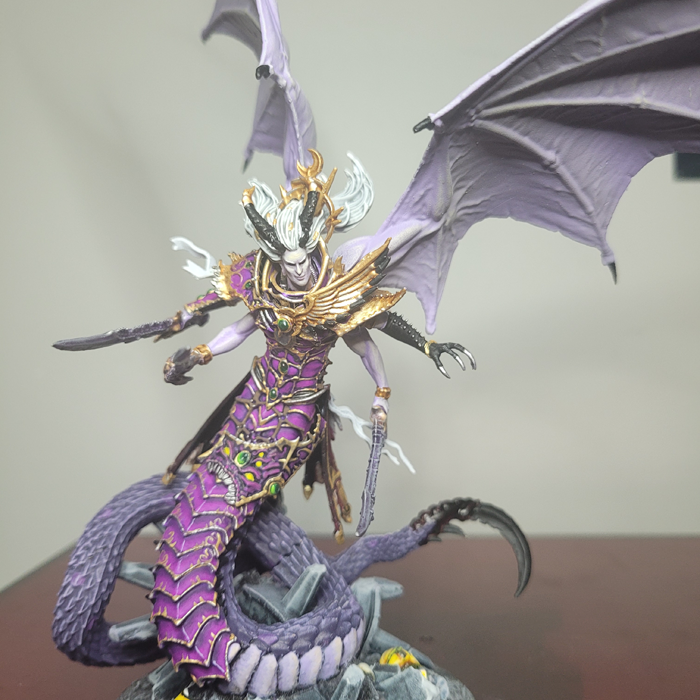
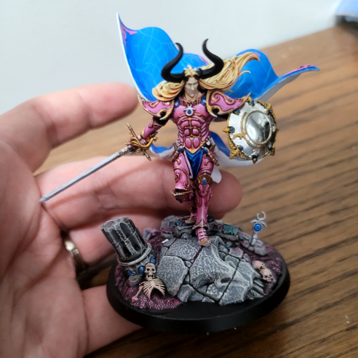
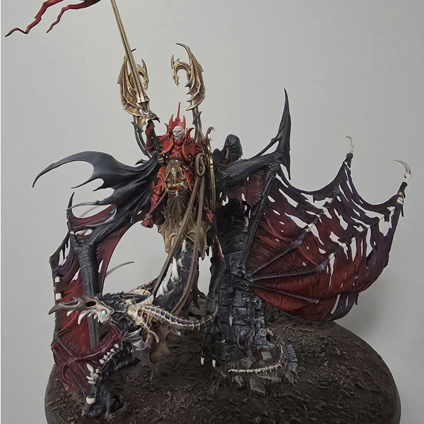

My name is David and I am a 3d artist/ mini painter I like Warhammer, D&D, and designing Various 3d models for 3d printing. I love to create different pieces and show them off. I also love horror movies and games my fav favorite ret horror movie sires are the conjuring franchise. Its tenson and dark atmosphere has inspired many of my pieces. My favorite horror game is Aelian isolation it is a very hard and immersive game as you are hunted by a xenomorph that you can't kill you can only slow it down. It leaves you feeling hapless and tense as you expect the Aelian around every corner and in every shadow.
As a painter I have been painting for 28 years. it has been a long journey full of many pitfalls, Hurdles and tripping hazards. There were many times when I wanted to give up and sell all my supplies, but I have stuck with it, and it has been the most rewarding hobby. To take a gray piece of plastic and turn it into your own personal masterpiece is rewarding beyond words. I have been vary blest to have made this apart of my job and paint for others. The ability to make others visions come true is more than I thought I would be doing with my art. My goal for my painting is for me to enter the biggest painting Competition in Europe, its called the golden demon Competition
As for 3D design this is a more recent ambition I have only been doing it for 7 years, but it has been an enlightening and humbling experience. I often pick things up quickly when it comes to working with my hands but this has been one of the hardest things i have tried teaching my self. one of the things I love most about it is when you get to print the stuff you make off on a 3d printer. It's like Christmas every time you pull the models of the print bed. I remember when 3d printers were science fiction, now you can design something and have it in your hands the same day. If you were to ask me 20 years ago if I thought this would be something id do for work id say you were nuts but here I am.
Now one of the biggest challenges to over come is equipment this took me years of saving and buying my setup a little at a time. I recommend getting a cheep but reliable 3d printer I started with a elegoo mars, printers like this can cost about $300-$400 but printers like these are long lasting I still use my printer from 6 years ago and its going strong. it's among my 4 other printers that I use regularly. Next, you would want a cheep but decent laptop, if you go used it can cost as little as the printer. I didn't start with much but with hard work and selling my art I now have my dream setup. with a bit of perseverance, you can achieve any dream.





